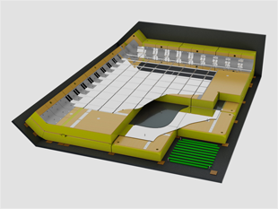
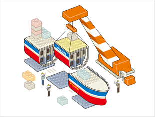
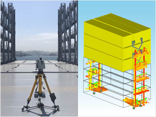
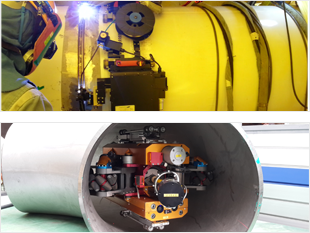

신공법/신기술
- #엔지니어링
- #미래제품
- #LNG Value Chain
- #ICT 융합 스마트십
- #에너지저감장치
- #공법 최적화
- #자동화
- #스마트 야드
-
해양 엔지니어링
성능과 안전은 무엇보다도 우선되어야 합니다. 이를 위해 삼성중공업은 Process, Safety, 진동소음 등 핵심 엔지니어링을 자체수행하고 기술선도 함으로써 기존 제품에 대한 성능/안전을 세계 최고 수준으로 유지할 뿐만 아니라 새로운 Concept 제품을 실현해 오고 있습니다.
삼성중공업에서 수주한 FLNG, FPSO, FSRU, FSO 등 다양한 선종에 대한 엔지니어링 혁신은 지금도 지속적으로 진행되고 있습니다. -
해양 프로젝트 재료 엔지니어링
기존 해양플랜트 재료 엔지니어링 기술은 해외 의존도가 높아 프로젝트 수행의 리스크가 높았습니다. 이에 삼성중공업은 자체 재료 검증 및 재료 선정 프로세스를 독자 개발함으로써 프로젝트 수행 리스크를 완화하고, 기술 자립화를 통해 해양 엔지니어링 설계 기술 경쟁력을 확보했습니다.
-

Topside Package
해상 유전, 가스전에 설치된 해양플랜트(FPSO, FLNG)에서 원유 및 천연가스를 생산, 처리하는 Topside의 설비 대부분은 특정 업체에서 공급되고 있습니다.
삼성중공업은 반복 해석 및 재해석 작업의 효율화를 위해 배관응력해석 자동화 시스템(OPAAS, Offshore piping Automation Analysis System)을 개발해 응력해석 시수를 단축하고 배관의 응력을 저감시키는 성과를 달성했습니다. -
배관응력해석 자동화시스템(OPAAS)
해양플랜트의 대형화에 따라 구조가 복잡해지고, 해양 규정 강화로 인한 검증 절차가 까다로워지면서 배관해석 물량이 증가하고 있습니다. 이에 설계 품질을 확보하기 위해서는 보다 많은 인력과 비용, 시간이 필요하게 되었습니다.
삼성중공업은 반복 해석 및 재해석 작업의 효율화를 위해 배관응력해석 자동화 시스템(OPAAS, Offshore piping Automation Analysis System)을 개발해 응력해석 시수를 단축하고 배관의 응력을 저감시키는 성과를 달성했습니다. -
DP/PMS/SPT HILS
선박·해양플랜트에 탑재되는 시스템이 복잡해짐에 따라, 제어 시스템의 중요성이 대두되고 있습니다.삼성중공업은 다양한 시스템에 대한 HILS(Hardware In the Loop Simulation)기술을 적용, 가상 시뮬레이션을 통한 제어시스템 검증을 수행하여 선박·해양플랜트의 신뢰성과 가용성을 높이고 시운전 중의 리스크와 비용 등을 최소화 하였습니다.
-
Engineering Data Change Management
프로젝트 전 과정에서 생성되는 정보를 일괄적으로 관리하는 시스템을 구축했습니다. 이를 통해 데이터 정합성이 향상되고, 변경 정보에 대한 효율적 관리가 가능합니다.
또한 프로젝트 운영 관리를 위한 Handover 데이터를 자동으로 생성해 Handover를 위한 부가적 업무를 획기적으로 절감할 수 있습니다.
-
부유식 발전플랜트
부유식 발전 플랜트는 근해 및 원해에서 석유, 가스 등 다양한 원료를 기반으로 전력을 생산하는 해상 발전 설비입니다. 삼성중공업 모델은 가스터빈을 이용한 Simple Cycle 방식과 폐열회수와 증기터빈을 이용한 Combined Cycle 방식을 기본으로 하며, 담수화, 연료전지, 파력/조력 발전 등과 연계된 다양한 친환경 하이브리드 시스템으로 구성할 수도 있습니다.
-
Semi-Rig 독자모델
세미리그는 그 동안 외국 선진사의 라이선스 모델을 사용하였지만 삼성중공업 표준을 충분히 반영하고 유연한 설계 변경에 대응하기 위해 독자적 기본 설계 능력을 확보하였습니다.
선주의 다양한 요구사항을 만족시킬 수 있도록 Hull Sizing, 시추시스템 배치, 구조 설계, DP assisted mooring 설계를 비롯한 세미리그 기본 설계기술을 확보하였으며 이를 활용하여 VDL 8000톤급 북해向 세미리그 독자 모델 개발을 수행하고 있습니다.
-
LNG 연료공급 시스템(S-Fugas)
최근 2행정 LNG 연료 추진 엔진이 LNG선에 적용되고 있습니다. MEGI 엔진은 300bar의 고압 FGSS가 요구되며, X-DF 엔진은 16bar의 저압 FGSS가 요구됩니다.
삼성중공업은 LNG 연료공급 시스템(S-Fugas)을 자체 개발해 엔진별 최적의 LNG FGSS를 제공하고 있습니다. -
부분 재액화 시스템(S-Reli)
LNG 운반선에서 발생하는 증발가스는 선박의 엔진 연료로 사용되었으나, 최근 고효율 엔진이 적용되면서 증발가스의 연료 전환이 크게 줄었습니다. 삼성중공업은 선박 연료로 사용되지 못한 증발가스를 재액화해 화물창에 저장하는 부분재액화 시스템(S-Reli)을 개발했습니다.
S-Reli를 적용할 경우 연간 약 만 톤의 증발가스를 재액화할 수 있으므로, 엔진과 병행운전을 통해 증발가스의 소모 없이 최적의 상태로 운항할 수 있습니다. -
재기화 시스템(S-Regas)
삼성중공업은 액화 상태로 저장·운송된 LNG를 사용하기 위해 다시 기체로 만드는 LNG 재기화 시스템(S-Regas)을 독자 개발했습니다. 해수를 이용하는 직접식과 글리콜 혼합액을 이용하는 간접식이 있으며, 다운타임을 최소화하고 운전자 편의를 고려한 제어기술이 적용됐습니다.
S-Regas의 국산화를 통해 원가 절감은 물론, 납기와 품질을 효율적으로 관리할 수 있어 삼성중공업의 수주 경쟁력을 한 층 강화했습니다. -

멤브레인 화물창(KC-S)
극저온의 LNG를 저장하기 위한 LNG 화물창은 선진사의 기술에 의존하고 있습니다. 삼성중공업은 국내 최초 독자 멤브레인 방식의 화물창을 개발해 LNG선 1척당 약 100억 원에 이르는 로열티 절감 기술을 확보했습니다.
국내 기술로 멤브레인 형상을 개선하고 2차 방벽 재질 등을 개발하여 그 의의가 더욱 큽니다.
-
스마트십 솔루션(SVESSEL)
삼성중공업 스마트십은 정보통신 기술과 선박운용 기술을 융합하여 경제적이고 안전한 운항이 가능한 선박을 말하며, 클라우드 데이터 센터를 기반으로 선박과 관련된 모든 데이터를 통합 관리함으로써 육상에서 원격 지원 및 생애주기 서비스가 가능한 육해상 통합 관리시스템입니다.
-
선내 경제/안전 운항 솔루션(SVESSEL Onboard)
삼성중공업의 독자적인 IoT 플랫폼인 BIG(onBoard Integrated Gateway)을 통해 실시간으로 운항 및 기관 데이터를 수집합니다.
SVESSEL Onboard 는 선박에 탑재된 솔루션으로 경제적이고 안전한 운항이 가능하도록 항해사나 기관사에게 정보를 제공 하고, 의사결정을 지원합니다 -
육상 관제 솔루션(SVESSEL Onshore)
선박의 실시간 데이터를 모아서 삼성중공업이 그 동안 인도한 선박들 약 950척의 실시간 위치를 모니터링하여 관제하고 있습니다.
실시간 데이터를 빅데이터 기술을 활용해서 분석하고 육상에서 의사결정을 할 수 있도록 지원하여 현재 보증 기간동안 선주사들에게 제공하고 있습니다. -
영상 기반 견시 지원 솔루션
어라운드뷰를 기반으로 주변 선박을 인지하고 운항 중에 발생할 수 있는 충돌에 대한 리스크를 감지하여 충돌을 회피할 수 있는 경로를 제공합니다.
-
SAVER Air
공기 윤활 시스템(SAVER Air)은 선체 바닥에 공기를 분사하여 해수와의 마찰 저항을 줄여 선박의 연비를 향상 시키는 친환경 시스템입니다.
삼성 중공업이 자체 개발한 SAVER Air 를 170,000m3급 LNG선에 적용한 결과, 5% 이상의 연료 절감 효과가 입증되었으며, 향후 다양한 선종에 확대 적용해 수주 경쟁력을 향상시키고자 합니다. -
SAVER Stator / Stator-D
삼성중공업이 독자 개발한 SAVER Stator-D는 선박의 프로펠러로 유입되는 해수의 흐름을 균일하게 함으로써 프로펠러의 추진력을 증가시켜 연비를 향상시키는 연료 절감 장치입니다.
삼성중공업은 SAVER Stator-D를 선박에 적용해 약 2%의 연비 절감 효과를 입증했으며, 이를 통해 향후 수주 경쟁력 강화에 기여할 것으로 기대합니다. -
SAVER CAP
대형 컨테이너선의 선수에 설치해 선체 주변의 해수 흐름을 제어함으로써 연비를 향상시키는SAVER CAP을 개발했습니다. SAVER CAP을 통해1.8%~3.7% 수준의 연비가 개선되며 선체 진동도 줄어 선수 의장품과 컨테이너 박스의 안전한 보관이 가능합니다.
-

One-time Setting 생산기술
블록의 탑재공법이 메가블록→기가블록→테라블록 공법으로 점차 발전함에 따라 탑재 블록이 대형화되고 그 형상 또한 복잡해져 조립 난이도가 급격히 증가하였으며 이로 인한 치수품질의 저하 및 생산성 감소 문제를 해결하기 위해 대형블록의 안정적 치수품질을 확보할 수 있는 One-Time Setting 생산기술을 확보하였습니다.
-
듀얼 리프팅(Dual Lifting) 공법
8,000톤급과 3,600톤급 해상크레인 2대를 결합하여 단일 해상크레인처럼 동시에 조작할 수 있는 듀얼 리프팅(Dual Lifting) 공법을 개발하여 11,600톤급 테라 블록을 인양, 이동, 탑재할 수 있는 세계 최대의 제작, 인양 능력을 확보하였습니다.
해양플랜트의 대형 구조물에 적용하여 블록 제작 기간 및 탑재 비용을 절감하였고 연동 시스템을 적용해 안전성과 효율성을 극대화하였습니다. -

3D 스캔 기반 CFT/Lashing 시뮬레이션
컨테이너의 기능 검사(CFT, Container Function Test)와 고박 검사 (Lashing Test)를 위한 기존의 목업지그 방식은 실물과 동일한 컨테이너를 사용해 많은 인력과 시간이 투입되며, 크레인을 사용하는 다른 공정에 영향을 미쳤습니다.
이를 개선하기 위해 삼성중공업에서는 3D스캔 기반의 CFT 시뮬레이션 시스템과 Lashing 시뮬레이션 시스템을 개발해 적용했습니다.
-

배관 용접·검사 자동화
크고 두꺼운 배관을 효율적으로 용접할 수 있는 공법을 개발하여 생산성을 향상시켰습니다. Hot-Wire TIG 오비탈 용접공법은 기존 보다 3배 이상, FCAW 오비탈 용접공법은 기존보다 6배 이상 용접속도가 향상되었습니다.
또한, 배관 내부를 주행하며 용접 후 배관을 청소·검사 할 수 있는 장비를 개발하였으며 세계 최초로 옥외 작업장에서 배관 내부 방사선 검사를 수행하여 방사선 검사 시간과 피폭시간을 대폭 단축시켰습니다. -
배관 오비탈 용접장비
해양플랜트 제작에서 품질에 가장 큰 영향을 주는 공정은 배관용접 이음부입니다. 기존에는 용접사 개개인의 역량에 따라 좌우됐던 배관용접 품질과 생산성을 획기적으로 개선하고자 삼성중공업은 동종업계 최초로 배관자동용접(오비탈용접) 공법을 도입했습니다.
이로 인해 용접불량률을 획기적으로 저감했고, 용접생산성 역시 큰 폭으로 향상시켰습니다.
-
Drawingless Yard(3D 도면)
제작처에서 2D도면을 참조해 제작하던 기존 방식을 벗어나, 3D 모델로부터 직접 3차원 형상정보와 각종 제작, 가공정보를 추출 후 제작처로 전송함으로써 2D도면 없이 제작이 가능하도록 개발했습니다.
제작도뿐만 아니라 설치도까지 확장되면 도면 없는 Drawingless Yard가 구현됩니다. -
Digital Twin(SEVAS, 모바일)
3D 경량모델을 활용해 공정진도를 직관적으로 이해하고, 태블릿을 활용해 야드전용 산업용 초고속 무선망(P-LTE) 기반으로 최신도면 및 3D 모델을 생산 부문에 전달함과 동시에 실시간 실적입력을 가능하게 해 4차 산업혁명 기술 중 Digital Twin 기술을 선도하고 있습니다.